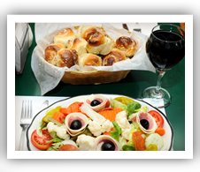
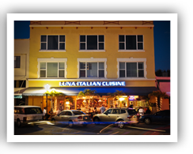
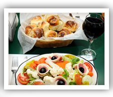
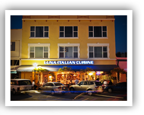
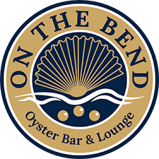
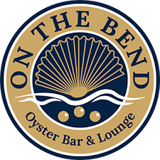

Luna's Italian Cuisine:

 



Established in 1991, Luna often referred to as a" Stuart landmark" draws an electric neighborhood crowd. Located in the Riverview shopping and Dining district in our Historic Downtown. With it's creative mouth watering entrees and specialty pizzas, Luna knows how to satisfy all appetites and budgets. Home of the original and irresistible garlic knot. You"ll be happly you stopped by! Casual dining as well as outside seating.
Riverwalk Oyster Bar:


 

Riverwalk Cafe & Oyster Bar is located in one of Stuart's most historic downtown buildings and is positively quaint. Riverwalk Cafe features over 120 selections of quality wine and over 50 available by the glass, the freshest seafood, USDA Prime Center Cut Steak and our fresh oyster raw bar. You will get greeted by friendly and knowledgeable staff along with a tantalizing menu. Riverwalk Cafe & Oyster Bar is a treat and should be on your list for lunch or dinner.
Spritz City Bistro:


Located in the heart of downtown Stuart, Spritz is a unique bistro with a casual upscale dining atmosphere. We're known for our tapas and small plates, as well as our craft cocktails and selection of local beers on tap. Come join us any day of the week for a fabulous lunch or dinner. Our menu offers an array of classic American cuisines with a twist. Stop in Monday thru Friday and be entertained by our lively bar staff for the best happy hour around. Let's not forget brunch on Saturday and Sunday featuring bottomless bloody Marys, bottomless mimosas, and $4 Bellini's!